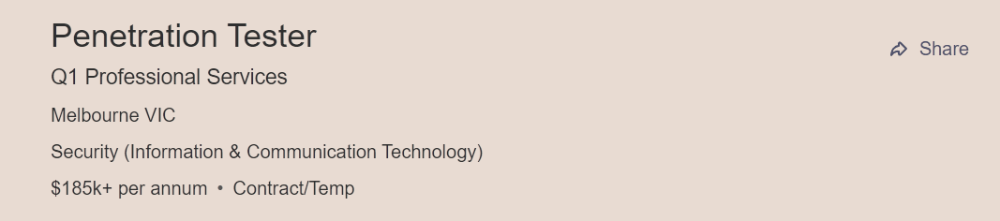

I was born and raised in Brisbane, Queensland to English parents who emigrated in 1980. I am the youngest of 3 children and being the only Australian in the family I’m often jokingly referred to as the ‘black sheep’.
I completed high school in 2002 and began a career as a Pastry Chef. While working in kitchens I found that I wasn’t satisfied with that career choice and went on to complete a couple of different qualifications at the same time. On top of being a Pastry Chef, I am a qualified Photographer/Photoimaging Technician and Animal Handler. While I'm not currently working in these fields, I do have a passion for animals and regularly pet-sit for friends and family. I also spend a lot of my spare time taking photographs on old film cameras and have held successful exhibitions in the past.
My other passions are netball and video games. I’ve been playing netball for 30 years (and even represented QLD in my youth) and I think the experience of playing a team sport has been invaluable in my ability to work within a team in a professional environment. Video games I play nearly every day and I'm a firm believer that they are great for developing patience, problem solving skills and practising critical thinking.
What initially lead me to an interest in IT is my love for video games and problem solving. I spend so much of my spare time engaging in games and puzzles that I thought I may as well try to incorporate those skills into a rewarding career.
After doing some reading and research into what IT encompasses, I've come to realize that there is so much more on offer than I initially realised. The endless possibilities for the future of technology are mind-blowing and I’m still not sure which path I'm going to end up on but I know that having a solid understanding of IT is going be an invaluable skill in whatever path I choose going forward.
I chose to study online as I am about to move an hour outside of Brisbane and needed to be able to study remotely. I’d heard good things about Open Universities Australia and after a couple of phone calls discussing my wants and needs, and with OUA’s recommendation, I decided on RMIT as my preferred institution.
During my time with RMIT I am expecting to learn the skills it takes to work successfully in the IT industry. Not only do I want and expect to learn the basics but I’m hoping that RMIT will equip me with the skills to stand out in a crowd and excel in my chosen IT career.
Seek Advertisement for Penetration Tester
A Penetration Tester (or Ethical Hacker/Pentester) is an incredibly important job in that it helps test the security of such things as web services, API’s and web applications.
The role involves testing a company’s security systems by designing attacks that will infiltrate a system and then using the findings to write reports educating the users on computer security. A Pentester will also help develop techniques, systems and procedures to prevent such instances from happening again. This position appeals to me as I love a challenge and I think I'm quite good at thinking outside the box. This is a skill that I think would be useful in attacking problems from angles that no-one expects.
Skill-wise, a Pentester is required to have a strong network and application security understanding, excellent critical thinking skills, strong coding skills and have familiarity with exploits and vulnerabilities outside of tool suites. It’s also important for someone in this role to continue up-skilling and have an evolving knowledge of web technologies.
The qualifications to become a Pentester include having degree in IT, several years of experience in the cyber security field and a certification such as EC-Council ‘Certified Ethical Hacker’ (CEH).
While I'm not currently anywhere near professionally qualified for this role, I intend on continuing my studies in Cyber Security after I finish the Bachelor of IT at RMIT. I do, however, have personal skills that I think will be well suited to the role - I am an avid puzzler, problem solver, critical thinker and I thrive when I'm faced with an obstacle that supposedly cannot be beaten.
To obtain the skills required to be a Pentester, I will continue with my studies – specializing in Cyber Security, take extracurricular ethical hacking courses, stay up-to-date with new technologies and systems, practice building networks, learn about developments in software and continue to practice problem solving and thinking outside the box.
“Architects are imaginative and strategic thinkers, with a plan for everything. It can be lonely at the top, as one of the rarest personality types – and one of the most capable – Architects (INTJs) know this all too well. Rational and quick-witted, Architects pride themselves on their ability to think for themselves, not to mention their uncanny knack for seeing right through phoniness and hypocrisy. But because their minds are never at rest, Architects may struggle to find people who can keep up with their nonstop analysis of everything around them.” - www.16personalities.com/free-personality-test
“Visual style is learning by seeing. You learn visually whenever you gain information from sight. This includes more than just the viewing of pictures and your surroundings. Visual learning also encompasses the written word. Visual learners benefit greatly from teaching that utilizes illustrations, charts, diagrams, videos, etc. They often feel a need to convert spoken instruction into visual form by taking notes.” - www.personalitymax.com/learning-styles-test/
“You tend to think about the actual choices you make and practice integrity by choosing to be honest and fair. If you scored less than 100%, you have the opportunity to think more about the choices you make and practice integrity more often when faced with ethical dilemmas.” www.mediapartners.com/how-ethical-are-you.html
For me, elements of these tests ring true but I think they need to be taken with a grain of salt. For instance, my INTJ-T result mentions that I'm introverted, which is true in my personal life, however, when working in a group dynamic I make a conscious effort to not let that stop me from contributing equally to a project and offering my thoughts and opinions. The test did point out my impatience as a flaw and that is something I have had brought to my attention in the past and I will definitely be keeping that at the forefront of my mind going into group work. I have also effectively used note taking and drawing as learning tools in the past so I think my learning style test is quite accurate.
These results will make me think about the way I behave and interact with the people I work with. Self-reflection is important and doing tests like these remind us of our strengths and flaws. Even if they aren’t scientifically backed.
When forming a team, I think it’s important to be upfront about your strengths and weaknesses and let your team mates know that you are always open to discussions about what’s working and what isn’t. Being prepared to give and take constructive criticism in a professional manner and finding workmates that compliment your work-style will make working together much better for everyone involved in the project.
My project is an app for finding like-minded individuals to train with, play casual sports with or just be active together (for example - play handball in the park, play 1 on 1 basketball, run through some basic ball handling drills). Think of it like tinder but instead of casual sex, it’s casual sports. It aims to fill the gap for people that don't want to or can’t play organized sport but want to be active and potentially make new friends through a common active interest.
This app idea came around through my own desire to practice netball skills and get a little bit of extra fitness into my week. I play netball a couple of times a week and while I have made great friends through those teams, I am often met with silence when I ask if anyone would be interested in doing a little extra casual training or just throwing a ball around in the park. Being a student, joining another team is outside of my budget so this app also covers that demographic of people that don’t want to or can’t afford to spend money on exercise.
A user will download the app (let’s call it ‘PlayPal’ for now) via an app store and sign up using their smart device. They will then create an online profile protected by a username and password. The profile will ask the user to set parameters for their location, availability and preferred activities. Profiles will also have the option to include some basic ‘about me’ information relevant to interests, activities and fitness levels. These features will help people decide if they are compatible when they receive a request.
Once a profile is created and the preferences set, the PlayPal app will be able to receive live alerts that fit the user's parameters.
For example:
User1 has set their location to West End, Brisbane, their availability to 6-9pm Monday, Tuesday and Friday and they are interested in games and training for ball sports like netball and basketball. User2 lives in the same area and creates an open invitation (a ‘PlayDate’ if you will) to shoot hoops somewhere in West End on Monday evening. That alert will register on the phone of anyone in the location parameters whose preferences fit.
User1 can then view the basic profile of the host (User2) and can request to start a conversation via the private chat or dismiss the alert entirely. The host also has the ability to decline User1’s request if they don’t feel like it’s a good match. If the PlayDate is accepted by both parties, the exact details (location and time) will be released (for privacy reasons the exact details of the PlayDate are withheld until both parties accept the invitation/request).
While the base level app will be free and the basic features available to all users, it will also feature a premium subscription service. This will include features such as an interest-based search function so if there aren’t a lot of PlayDates being set for your particular preferences you can search for like-minded individuals using keywords from their interests and request to connect with them directly. The app will also be monetized through ad revenue and the premium subscription will remove all ads.
The hardware needed for PlayPal is minimal (smartphone, tablet) as the app itself is a BYOD product.
For software I will need tools for security, design, location, scheduling and messaging. To build the app I could use open-source tools such as Google Maps API’s, phone location services, Google Calendar and an app builder such as MIT App Inventor. As this app will also need to store user data (such as keywords for the shared interest search), I will need to build backend database using SQL. I’ve never built an app before I’m sure there are components I haven’t thought of and if I choose to develop this idea, I will face many roadblocks along the way because this. However, there are a lot of apps with similar features out there and so I don't think it will be too difficult to problem solve.
While it’s possible for one person to learn all of those skills I think it would be more feasible to break down the different components needed and share them across a team. All of those skills are tools I expect to have under my belt by the time I finish a degree in IT, therefore I don’t believe it would be difficult to assemble a team that has a good level of skill in each category.
The software necessary to build something like PlayPal will need more investigating as I move forward in my course but I believe I will need to build a program to integrate the front and backend that will be able to call on API’s and databases.
If this project is successful if will enable people to connect with like-minded people in their community. It will also offer a cheaper alternative to fitness for those who can’t afford gym memberships and paid sports. With the increasing cost of living, many people are feeling the pinch and having to give up peripheral spending and focus on things like housing and food. PlayPal offers a cheap, if not free, alternative for people to connect with others while also investing in their health and having fun. I believe this app could potentially help with some huge issues facing people such as - health (physical & mental), the cost of living and the isolation we sometimes feel in an increasingly online-based society.